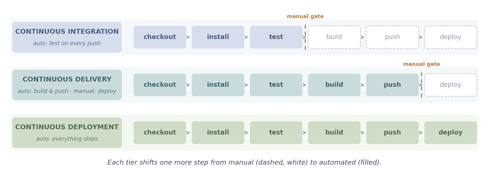
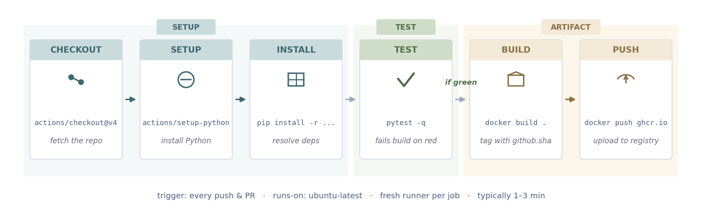

CI/CD with GitHub Actions
Workflows · triggers · GHCR push · branch protection
Part 1
Why CI/CD
The manual checks that break under load — and the spectrum of automation that replaces them.
1Before CI — the manual pain
2CI vs CD vs CD — one spectrum
Before CI: the manual pain
Without automation, every push relies on a human remembering to run the tests, build the image, and ship the right artefact. That works for one developer on a good day — and breaks on every other day.
Tests skipped
did you run the tests?
The reviewer asks. The author hopes. Nobody actually re-ran the full suite after the last rebase.
Env mismatch
it built on my laptop
Wheel install worked in Python 3.11 with cached deps. The clean build server hits a missing system library.
Release-by-vibes
ship it when you have time
Steps live in a wiki page two refactors out of date. No tagged artefact means no clean rollback either.
Emergency edits
late-Friday hotfix
Someone edits straight on production. Monday morning, nobody can reproduce the live state.
The fix
CI removes the human bottleneck. Every push runs the same automated check on a clean machine — no exceptions, no "I forgot".
CI vs CD vs CD — three terms, one spectrum
The same letters are reused. The difference is how far down the pipeline automation reaches. Continuous integration tests. Continuous delivery builds and stages. Continuous deployment ships.

Continuous integration means changes from many developers merge often and every merge gets the same automated check. Continuous delivery adds an automated build that produces a deployable artefact — the actual deploy is a manual click. Continuous deployment removes that last gate: any commit that passes goes to production.
Part 2
Anatomy of a workflow
The four building blocks — workflow, job, step, action — and the YAML file that wires them together.
1Building blocks — runner, jobs, steps
2Workflow YAML anatomy
3Triggers — when a workflow runs
GitHub Actions building blocks
A workflow is the YAML file. It contains jobs that run in parallel on fresh VMs. Each job runs its steps in order — where a step is either a shell command (run:) or a Marketplace action (uses:).
1workflow
A .yml file under .github/workflows/. Declares the jobs and when to run them.
2job
A unit of work that runs on its own fresh runner VM. Jobs run in parallel by default.
3step
An ordered instruction inside a job — either run: (shell) or uses: (action).
4action
A reusable step from the Marketplace, invoked as uses: owner/name@vN.
.github/workflows/ci.yml
test
runner · ubuntu-latest
1actuses: actions/checkout@v4
2actuses: actions/setup-python@v5
3runrun: pip install -r requirements.txt
4runrun: pytest -q
build
runner · ubuntu-latest
1actuses: actions/checkout@v4
2runrun: docker build -t app .
3runrun: docker push ghcr.io/...
ACT = a Marketplace action ·
RUN = a plain shell command ·
steps run top-to-bottom; both jobs run on separate VMs at the same time
Workflow YAML anatomy
A workflow lives at .github/workflows/ci.yml. The file declares when to run, where to run, and what to run.
.github/workflows/ci.ymlname: CI
on:
push:
branches: [main]
pull_request:
jobs:
test:
runs-on: ubuntu-latest
steps:
- uses: actions/checkout@v4
- uses: actions/setup-python@v5
with:
python-version: "3.11"
- run: pip install -r requirements.txt
- run: pytest -q
nameshows up in the Actions tab — pick something descriptive, not just "CI".
onthe trigger. Lists of events: every push to main plus every pull_request.
jobsone or more jobs. Each gets its own runner; they run in parallel unless you add needs:.
runs-onchooses the runner image — ubuntu-latest, macos-latest, or windows-latest.
stepsthe instructions. uses: invokes a Marketplace action; run: executes a shell command.
Triggers — when a workflow runs
The on: block picks the events that start a workflow. Most pipelines use two or three of these — combined, not exclusive.
push
on every commit
The bread-and-butter trigger — runs CI on each push to the chosen branches.
on:
push:
branches: [main, dev]
pull_request
on PR open / update
Reviewers see a check before merging — pair with branch protection to block red merges.
on:
pull_request:
branches: [main]
schedule
on a cron timer
Nightly dependency audits, freshness checks against a deployed service, scheduled rebuilds.
on:
schedule:
- cron: "0 3 * * *"
workflow_dispatch
on a manual click
Adds a "Run workflow" button in the Actions UI. Good for one-off deploys, backfills, debug runs.
on:
workflow_dispatch:
Also exists: release (fires when a GitHub release is published) and workflow_run (chain one workflow after another). Reach for them once the four above stop being enough.
Combine, don't pick one
A common pattern is
push on
main +
pull_request on everything — feature branches get checked before merge, and
main gets one more verification post-merge.
Part 3
A real Python pipeline
The six-step shape every Python service on GitHub follows, plus the cheap wins that make it fast, broad, and reproducible.
1Pipeline shape — six steps
2Matrix builds — parallel lanes
3Caching — pip & Docker layers
4Build & push image to GHCR
5Other registries — Docker Hub, ECR, GCR, ACR
Pipeline shape — six steps
Almost every Python service on GitHub runs the same sequence: checkout → setup → install → test → build → publish. Each step is one entry in the workflow's steps: list.

Steps 1–4 verify the code · steps 5–6 produce the artefact
Why this order
Tests run before the image build, so a red test fails the pipeline cheaply — no minutes wasted producing an artefact you're about to throw away. The image step only runs when everything before it is green.
Matrix builds — same steps, parallel lanes
A matrix runs the same job across multiple variants in parallel — usually Python versions, but the same shape covers OS or dependency-pin combinations. One YAML field, N independent runners.
python 3.11
1checkout
2setup-python 3.11
3pip install
4ruff check
✓pytest passed
python 3.12
1checkout
2setup-python 3.12
3pip install
4ruff check
✓pytest passed
jobs:
test:
strategy:
fail-fast: false
matrix:
python-version: ["3.11", "3.12"]
steps:
- uses: actions/setup-python@v5
with:
python-version: ${{ matrix.python-version }}
Wall-clock cost
Both runners spin up on separate VMs at the same time. Total time =
slowest lane, not the sum — two variants cost about the same wall-clock minutes as one.
Caching — reuse what didn't change
Fresh VM per run means every install starts from zero by default. Caching stores heavy artefacts keyed on the inputs that produced them — match the key, skip the work.
pip wheels
key: hash(requirements.txt)
- uses: actions/setup-python@v5
with:
cache: pip
cache-dependency-path: requirements.txt
install step: ~45 s → < 1 s
Docker layers
key: Dockerfile + COPY inputs
- uses: docker/build-push-action@v5
with:
cache-from: type=gha
cache-to: type=gha,mode=max
build step: ~4 min → ~30 s
Key the cache on the lockfile, never on the branch — a cache that never invalidates is worse than no cache (stale wheels, missed security updates).
Build & push image to GHCR
Tests passing is half the job — the other half is producing an artefact the next stage can deploy. GitHub Container Registry ships with every repo, and the workflow pushes there with the auto-issued GITHUB_TOKEN — no extra secret to manage.
latest
moving pointer
Most recent push on main. Use it in dev, never in prod.
sha-abc1234
immutable per commit
What production references. Rollback = point at the previous sha.
v1.2.3
when you push a git tag
Human-readable label sitting on top of the immutable sha.
.github/workflows/build.ymlon:
push: { branches: [main], tags: ["v*"] }
jobs:
build-and-push:
runs-on: ubuntu-latest
permissions: { contents: read, packages: write }
steps:
- uses: actions/checkout@v4
- uses: docker/login-action@v3
with:
registry: ghcr.io
username: ${{ github.actor }}
password: ${{ secrets.GITHUB_TOKEN }}
- id: meta
uses: docker/metadata-action@v5
with:
images: ghcr.io/${{ github.repository_owner }}/assistant
tags: |
type=sha,format=short
type=ref,event=tag
type=raw,value=latest,enable={{is_default_branch}}
- uses: docker/build-push-action@v5
with:
context: .
push: true
tags: ${{ steps.meta.outputs.tags }}
cache-from: type=gha
cache-to: type=gha,mode=max
GITHUB_TOKEN > personal access token
Every workflow run is issued a short-lived
GITHUB_TOKEN scoped to the repo. Granting it
packages: write is enough to push to GHCR — the token rotates per run, not per human.
Other registries — same workflow, different target
The docker/login-action + docker/build-push-action combo is registry-agnostic. Swap the registry: field and the auth secrets, and the same pipeline points at Docker Hub, AWS ECR, Google Artifact Registry, Azure ACR, or a private Harbor.
Docker Hubdocker.io
Username + Hub access token, stored as repo secrets.
AWS ECR<acct>.dkr.ecr.<region>.amazonaws.com
OIDC + amazon-ecr-login; no stored AWS keys.
Google Artifact Registry<region>-docker.pkg.dev
Service-account JSON in a secret, or workload identity.
Azure ACR<name>.azurecr.io
Service-principal in a secret, or managed identity (OIDC).
Docker Hub example — the most common alternative
- uses: docker/login-action@v3
with:
username: ${{ secrets.DOCKERHUB_USERNAME }}
password: ${{ secrets.DOCKERHUB_TOKEN }}
- uses: docker/build-push-action@v5
with:
context: .
push: true
tags: ${{ secrets.DOCKERHUB_USERNAME }}/assistant:${{ github.sha }}
When to pick which
GHCR when your code lives on GitHub — auto-issued token, no rotation, no rate limits on public images.
Docker Hub when you need a vendor-neutral public registry or compatibility with existing tooling.
ECR / GCR / ACR when you deploy to that cloud — pulls go over the cloud's internal network instead of the public internet.
Part 4
Config & gating
The configuration that surrounds the pipeline — credentials, runtime environment, and the merge gate that keeps main green.
1Pull requests + branch protection
2Secrets & environment variables
3Useful environment variables
Pull requests + branch protection — the gate
CI is only useful if you can't merge red code. Branch protection rules tell GitHub to refuse a merge until specific checks pass. Combined with pull_request triggers, every change goes through the same automated gate.
Trigger workflows on PR events
on:
push:
branches: [main]
pull_request:
branches: [main]
workflow_dispatch:
Branch protection rule for main
Settings → Branches → Add rule. Six checkboxes that turn main into a gated branch:
✓
Require a pull request
No direct pushes to main — every change goes through a PR.
✓
Require 1+ approval
A second pair of eyes signs off on the diff before merge.
✓
Require status checks
Pick lint-and-test (3.11) and (3.12) from the matrix.
✓
Branches up to date
Re-runs CI after a base-branch update so stale PRs can't slip in.
✓
Resolve conversations
No merge while review threads are still open.
✓
Linear history
Squash or rebase merges only — keeps git log readable.
END RESULT
No PR can merge until both matrix variants are green, a teammate has approved, and any review comments are resolved.
main stays green by construction — the only path in is through a passing PR.
Secrets and environment variables
Two kinds of config: secrets (encrypted, auto-masked in logs, e.g. API keys) and env (plain runtime variables, e.g. PYTHONUNBUFFERED). Reference either at workflow, job, or step scope.
Three scopes — smallest first
Repository
Available to all workflows in one repo — the default scope for a single service.
Organization
Shared across selected repos — one registry token used by many services.
Environment
Scoped to a named env like production. Can require manual approval before use.
Reference them in YAML
jobs:
test:
runs-on: ubuntu-latest
env:
PYTHONUNBUFFERED: "1"
steps:
- uses: actions/checkout@v4
- run: pytest
env:
OPENAI_API_KEY: ${{ secrets.OPENAI_API_KEY }}
Useful environment variables
Two groups — the variables you configure to control how tools behave in CI, and the variables and context GitHub injects at runtime for you to read.
Python
- PYTHONUNBUFFERED=1
- Flush stdout/stderr per line — no lost logs on crash.
- FORCE_COLOR=1
- Keep ruff / pytest ANSI colours in Actions logs.
pip
- PIP_DISABLE_PIP_VERSION_CHECK=1
- Silence the "new pip available" banner.
- PIP_NO_CACHE_DIR=1
- Skip pip's local cache (you're using the Actions cache).
Docker
- DOCKER_BUILDKIT=1
- Use BuildKit — faster, supports
cache-from/to.
- BUILDKIT_PROGRESS=plain
- Plain-text build output instead of the TTY animation.
Runner (auto)
- CI=true
- GitHub sets this. Code can branch on "am I in CI?"
- RUNNER_OS
Linux / macOS / Windows — pick OS-specific paths.- RUNNER_TEMP
- Scratch directory; auto-cleaned when the job ends.
github.*
- ${{ github.sha }}
- Commit SHA — tag images and link logs to a build.
- ${{ github.ref }}
- Ref that triggered the run (e.g.
refs/heads/main).
- ${{ github.repository }}
owner/name — ideal for image paths.- ${{ github.event_name }}
- The trigger (
push, pull_request …) — gate steps with if:.
Recap
A workflow file in .github/workflows/ turns "did you remember to run the tests?" into a check that runs every time. Same pipeline, every push, every contributor.
You should now be able to:
✓
Write a workflow from scratch
A .yml in .github/workflows/ with on:, jobs:, and steps: — runs on a fresh VM per job.
✓
Pick the right trigger
Combine push, pull_request, schedule, and workflow_dispatch — not exclusive.
✓
Test across versions in parallel
One matrix: field forks the job into N runners; total time = slowest lane.
✓
Cache to shrink build times
Pip wheels and Docker layers, keyed on the lockfile — minutes drop to seconds.
✓
Push a tagged image to GHCR
Auto-issued GITHUB_TOKEN, three tags (latest, sha-, vX.Y.Z) — prod references the sha.
✓
Gate main with branch protection
Require PR + approval + passing matrix checks before merge — main stays green by construction.
Resources
D
Docs
official reference
R
Read
Marketplace & lists
Validate locally before pushing — paste your YAML into actionlint to catch typos and missing inputs.